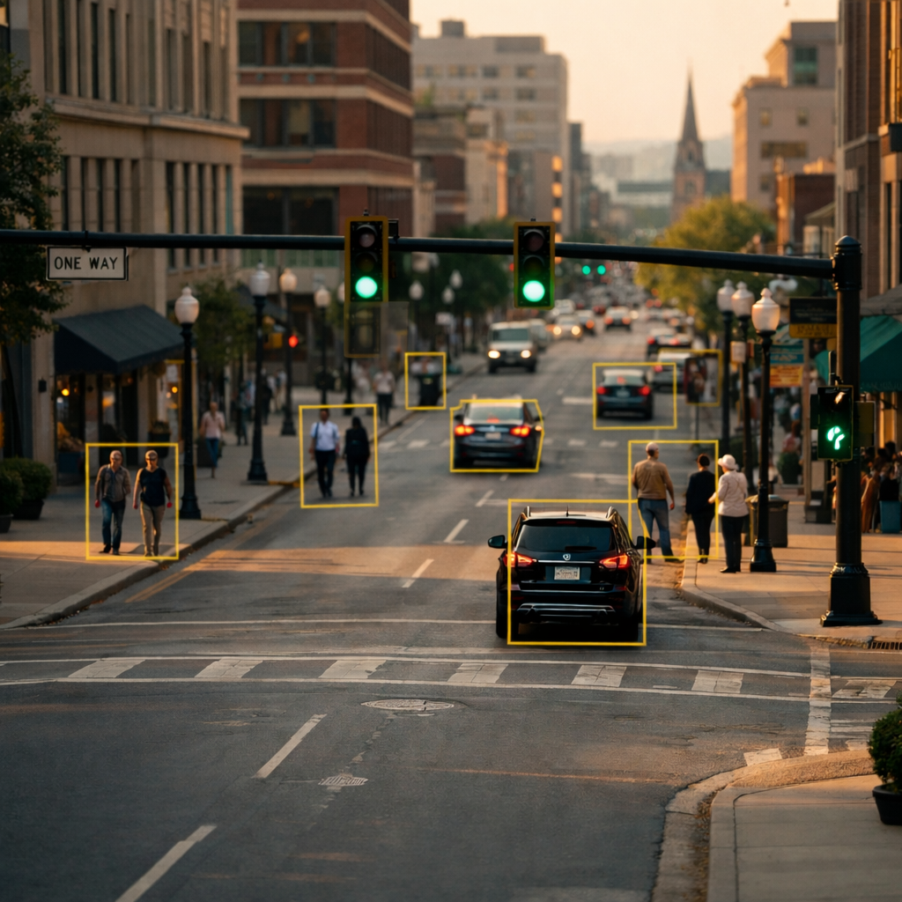
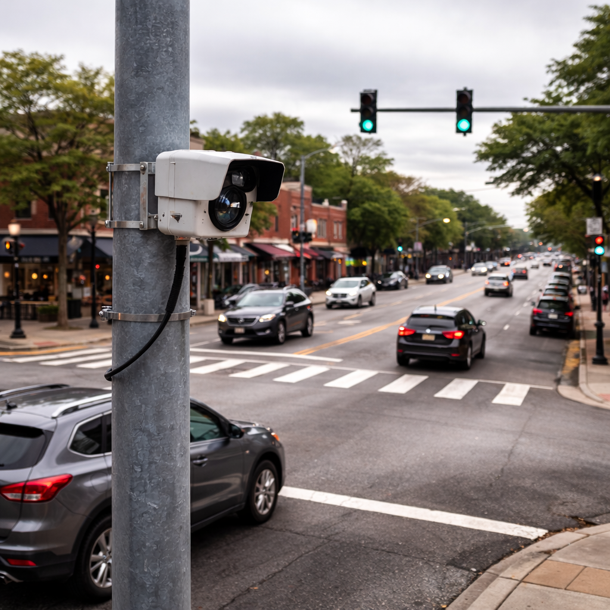
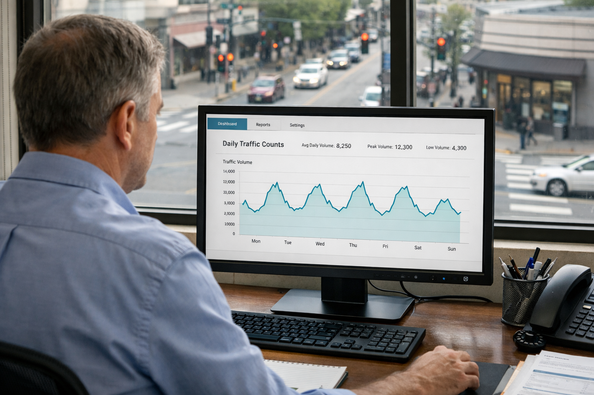
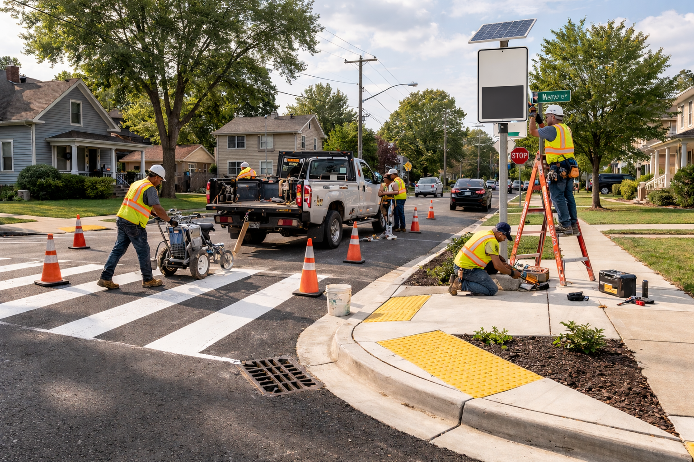
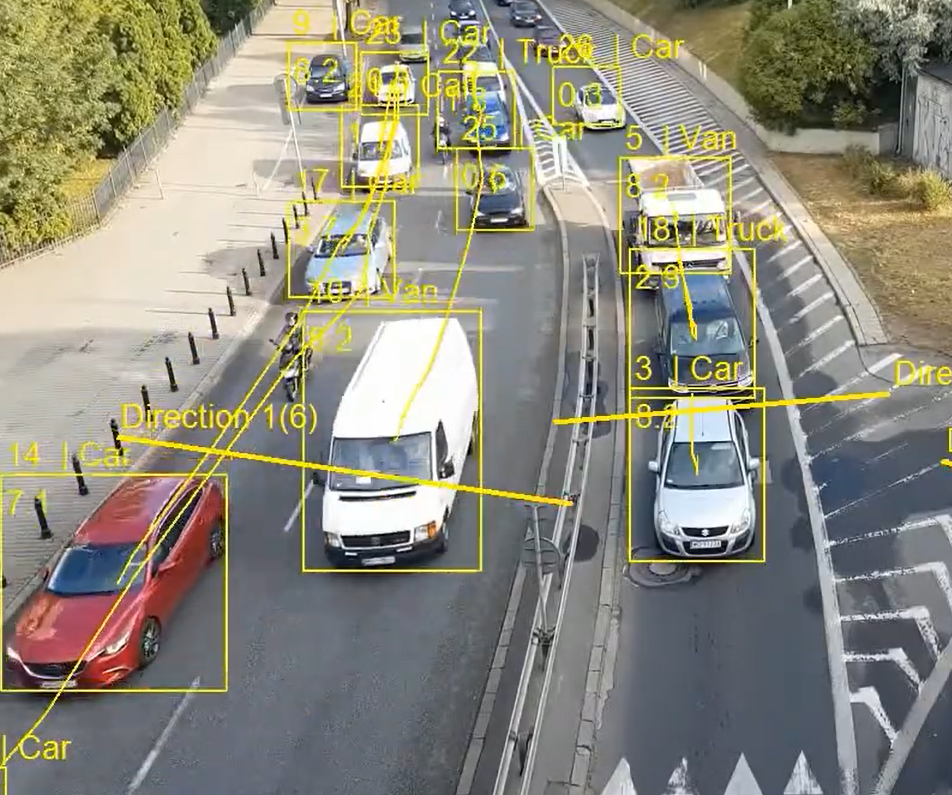
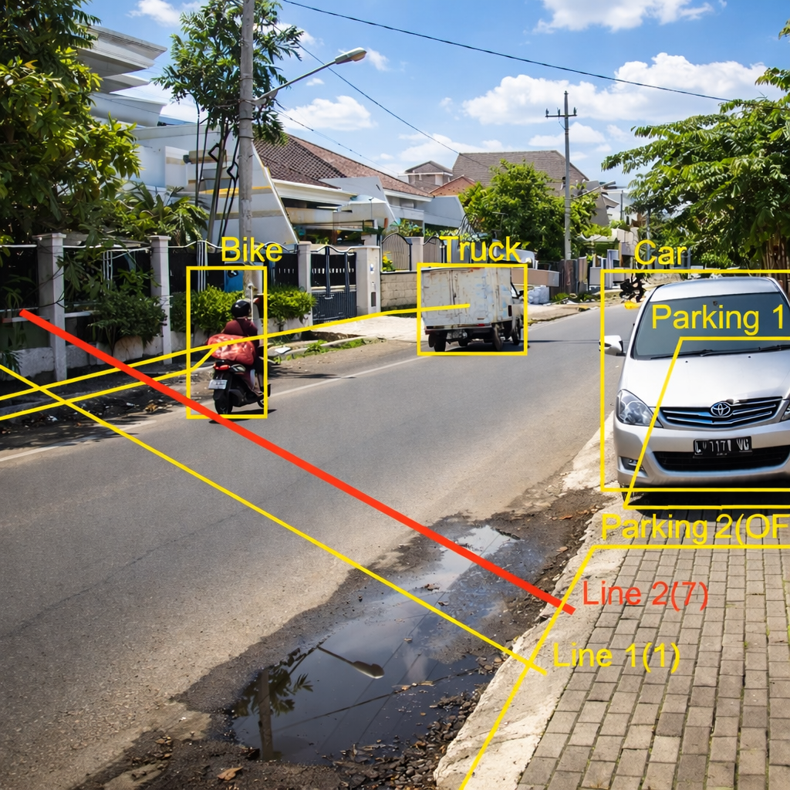

Municipal leaders across the country are using existing camera networks to understand their cities in ways that were not possible before. From traffic engineering to public safety to budget planning, DashDotData transforms footage into facts—the kind of facts that guide real decisions about where to calm traffic, how to deploy resources, and what infrastructure actually needs to change.
Request a walkthroughMost cities already have cameras focused on key intersections and roads. What they don't have is structured visibility into what those cameras are seeing. You're left making decisions about traffic, safety, and infrastructure without knowing the one thing that matters most: what's actually happening on your streets.

DashDotData synthesizes the data from your city's entire camera network, then shows you exactly how to use these measurements to calm traffic, prioritize where officers work, justify infrastructure spending, attract investment, and build the trust your community deserves.
Your cameras capture everything, and DashDotData translates that footage into concrete measurements that reveal how your streets actually function.
Track hourly, daily and seasonal traffic patterns with precision.
Separate cars, trucks, buses and more to understand true roadway composition.
See how fast vehicles are moving and where congestion exists on your streets.
We follow a clear path: establish a baseline, show traffic trends visually, identify outliers, extract the insight, then help you act on it. The result is a repeatable, transparent framework for city-wide operational decision-making.

Determine what "normal" looks like at each camera location
Identify traffic patterns, trends and variations
Highlight statistically meaningful outliers

Deploy strategies and resources backed by data
Cities using DashDotData reduce guesswork and shorten planning cycles. Interventions become targeted. Budget requests become defensible. Community trust increases.
Replace months of debate with weeks of implementation backed by evidence.
Put the right resources in the right places — with measurable justification.
Grant applications and budget requests land because the data speaks for itself.


Every month without visibility into your streets is a month of decisions made blind. Traffic calming efforts miss their mark, enforcement resources scatter across the wrong locations, and infrastructure spending gets justified by hope instead of hard evidence.
State transportation departments can run the studies that measure what you need to know, but they take years, cost tens of thousands of dollars and still cannot provide the depth of detail that our camera analytics can. Your city's cameras could answer the same questions in weeks.
The cameras exist. The traffic patterns and outliers are happening right now. DashDotData simply unlocks what your cameras have been capturing all along, turning your camera network into immediate insight.
Everything you need to know about how DashDotData works and what it means for your city, borough or municipality.
We never store faces or identify individuals. We quantify and classify vehicle and pedestrian movement at an aggregate level.
Most municipal camera networks work with our system. We handle standard IP cameras and legacy systems alike.
A pilot typically runs in weeks, not months. We help with the technical work so you focus on the insights.
Yes. Speed data, traffic flow patterns, and violation hotspots help you strategically deploy resources where they matter most.
Your city owns the data. You control access, retention, and how it's used. Full transparency, no surprises.
Absolutely. Whether you have five cameras or five hundred, the system scales to your needs and budget.
Reach out to our team. We're here to talk through your specific situation.
ContactEnter your email and we'll send you everything you need to schedule your personalized walkthrough and Q&A session.
By submitting this form you agree to our terms and privacy policy.